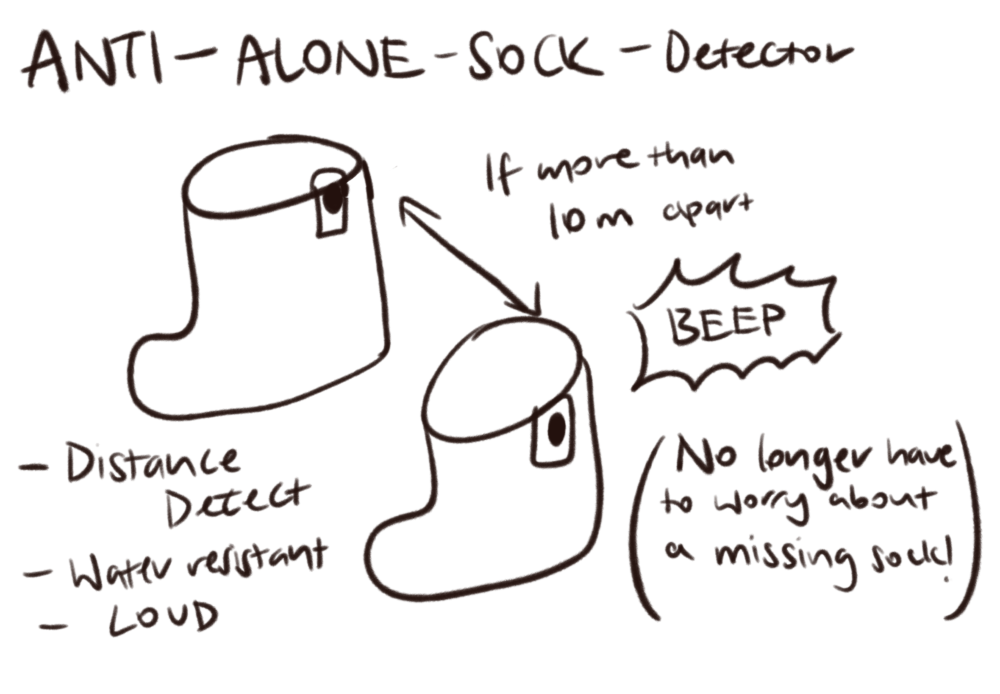

Chindogu Research — Hay Fever Hat
This Chindogu is designed to provide relief from hay fever symptoms through a constant supply of tissue paper. It might not solve the issue from the root but a solution is a solution.
↗ view source
My Chindogu
My Chindogu is called the Anti-Alone-Sock-Detector that minimises the chances of only having one sock with its missing pair (Because that is always a pain). Hence, by installing two chips that will beep as soon as their dectected distance is > 10M, it will BEEP like crazy. Its only enemy may be the washing machine...